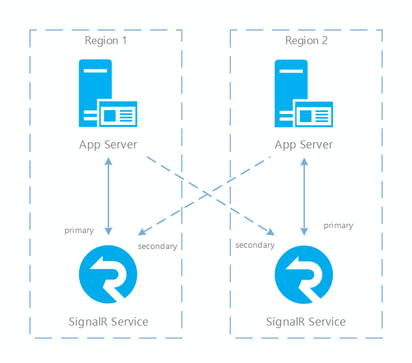
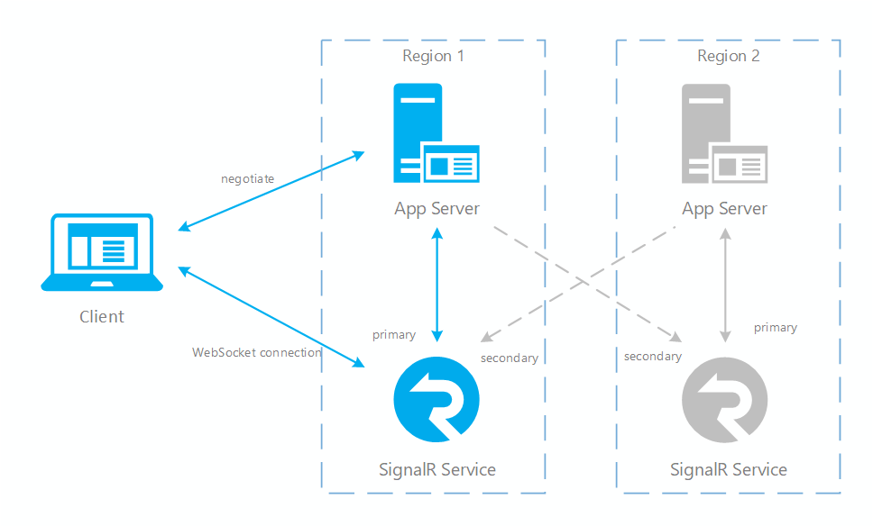
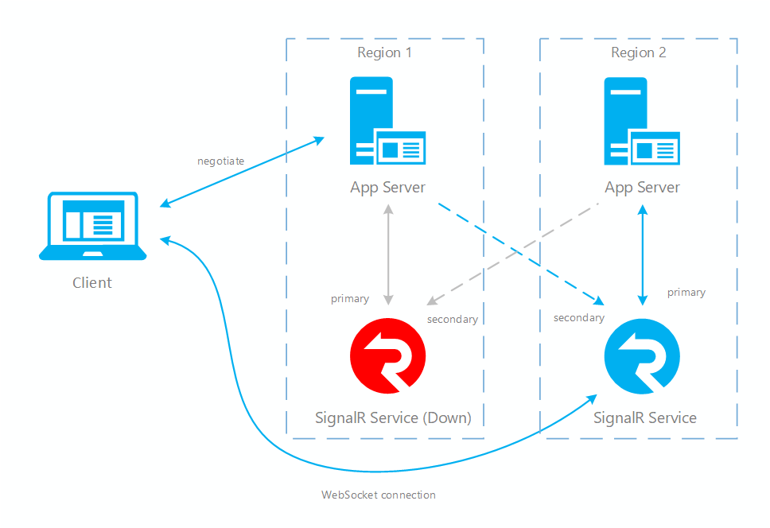
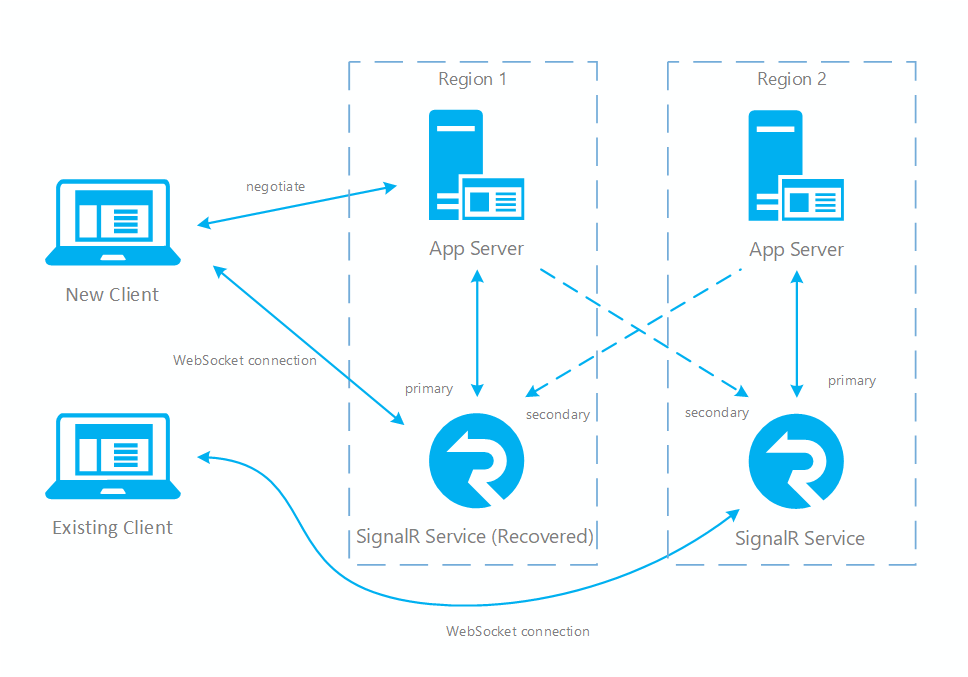

在Azure SignalR Service SDK v1.0.8 版本中增加了一个新的功能sharding. 可用允许应用服务连向多个ASRS Endpoints。 从而增加SignalR应用服务的高可用性和灾难恢复能力。
单一ASRS实例常会遇到的瓶颈
跟其他的Azure Service一样，ASRS创建的时候会发布到特定的region, 例如West US 2. 当客户端、应用服务端跟ASRS的实例部署在同一个Region的时候，网络延迟会得到极大的优化。但是当客户端、应用服务端与ASRS实例部署在不同的Region的时候，会受到网络延迟方面的影响。
SignalR的应用是一个长连接的应用场景，在使用过程中，对于连接的稳定性非常的敏感。相对于HTTP应用的这种无状态连接的应用场景，一旦客户端与服务器端的连接断开，客户端会立刻感受到。对于SignalR的应用，强调应用系统的弹性和恢复能力更为重要。
另外一方面，Azure SignalR Service目前单个实例最高只支持100 Unit，这意味这最高只能支持100K的连接数。当客户端数目超过这一数目的时候, 单个ASRS的实例就无法满足这个业务量的需求。短期内微软的ASRS的产品组还没有计划提高这一限制。
为了优化和解决上述三个问题，Azure SignalR SDK v1.0.8增加了新的功能 – Sharding.这个功能可以在应用服务同时使用多个ASRS的实例作为Endpoint。因为支持多个实例，可以用来增加最大的并发连接数，从而超过单个实例最大的100K连接限制。也可将客户端的连接分担到到更多的服务端连接上，当单个ASRS实例发生问题的时候会自动切换到备用的实例上。从而增强了应用系统的高可用性和灾难恢复能力。
Azure Signalr Service的高可用性架构
为了能够让Azure SignalR Service具备高可用性的弹性，需要在不同区域中设置多个ASRS实例，并在应用服务上注册这些ASRS实例。在应用服务上，这些ASRS实例可以注册为两种不同的角色(Role), 及Primary Endpoint 和 Secondary Endpoint.
- Primary Endpoint : 作为Primary Endpoint的ASRS实例，会具备可靠的网络连接，并且可以接收客户端发送的信息，也能够直接发送信息给客户端。在Cross-Region的场景中，意味这Primary Endpoint与客户端、应用服务端部署在同一个Region。这样可以降低网络的延迟。
- Secondary Endpoint : Secondary Endpoint的ASRS实例，是一个fully functionning的实例，在功能上与Primary Endpoint没有区别，并且只作为Primary Endpoint的backup。Secondary Endpoint与客户端之间保持的是弱连接。Seondary Endpoint不能给客户端直接发送消息，而是通过广播的方式进行。在网络上，它与客户端、应用服务端部署在不同的Region。
值得注意的是 ：Primary Endpoint 和 Secondary Endpoint 是在应用程序根据实际的需求自行定义的，推荐的方式是按照Region来进行划分。但是这并不是绝对的，可以按照自身的需求来进行修改。

客户端与ASRS建立连接，需要与应用服务进行negotiate。 Azure SignalR SDK只会将客户端的连接分配到身份为Primary Endpoint的ASRS的实例上。使得客户端总是跟Primary Endpoint保持这强链接，它不会与Secondary Endpoint直接产生连接，而是采用了一种个比较特殊的弱连接。这意味这endpoints在向客户端发送消息时候的行为不太一样。当应用服务端向一个客户端发送消息的时候，如果这个客户端通过ASRS与这个应用是直接相连接的(强链接)，那么消息会直接发送到客户端上。如果客户端通过ASRS与应用保持的是弱连接，那么应用服务端是通过ASRS所有的Endpoint进行广播的方式来发送消息，然后由那个与客户端有连接的ASRS实例来发送消息到达客户端。
在ASRS SDK的failover的机制中，如果Primary Endpoint离线，客户端再次negotiate的时候，如果列表中还有可用的Primary Endpoint, 那么客户端会跟其中的一个Primary Endpoint重新negotiate。如果所有的Primary Endpoint都离线的情况下，Secondary Endpoint就有可能会被提升到Primary Endpoint。这种failover的机制可以了整个应用系统的稳定性。
如何在一个应用服务中配置多个ASRS Endpoint
从Azure SignalR Service SDK v1.0.8开始，SDK支持多个ASRS Endpoint. 在SignalR的应用中，ConnectionString是通过Azure:SignalR:ConnectionString 来配置的. ASP.Net Core和ASP.Net 会有所不同。
在 ASP.Net Core中可以通过命令行添加配置项 ：
1 | dotnet user-secrets set Azure:SignalR:ConnectionString:east-region-a <ConnectionString1> |
ASP.Net Core SignalR的ConnectionString可以配置在appsettings.json
1 | { |
ASP.Net SignalR的ConnectionString可以配置在web.config
1 | <?xml version="1.0" encoding="utf-8" ?> |
通过code添加多个endpoint
在SDK中有ServicEndpoint Class是用来添加多个endpoint.
ASP.NET Core
1 | services.AddSignalR() |
ASP.NET
1 | app.MapAzureSignalR( |
Custom Routing
当设定了多个endpoint的时候，客户端只会跟其中一个endpoint建立连接。SDK有一个默认的DefaultEndpointRouter来分配这些endpoint. 这个默认的Endpoint Router采用下面的原则来分配endpoint。
- Client request routing
默认情况下，当客户端向应用服务发起negotiate请求的时候，SDK会从可用的endpoint列表中选取一个Primary Endpoint。将这个endpoint的token和url返回给客户端，客户端拿到这些信息之后会与指定的Endpoint进行连接。 - Server message routing
当应用服务向其中一些客户端发送消息的时候。如果客户端的连接是与这个应用服务的Server Connection是强链接的，这个消息会直接发送到对应的endpoint上面去。如果是弱连接的情况，这个消息会广播到所有的endpoint， 再由与客户端相连接的的endpoint来发送消息。
这个默认的Routing规则符合一部分的应用场景。这里面也有许多可用优化的方面。例如可用按照客户端和应服务端所处在的region，就近为客户端分配endpoint。例如，发起请求的客户端的区域在美西2，那么就近原则是分配West US 2的ASRS Endpoint给客户端，只有可用减少网络的延迟。为了实现这种定制化的routing需求，可用直接实现一个class并且继承自EndpointRouterDecorator类，来实现自己的优化方法。
下面这个例子，是按照客户端所属的group，就近安排他们所接入的endpoint.
1 | private class CustomRouter : EndpointRouterDecorator |
下面这个例子，是按照应用服务所在的位置就近接入endpoint.
1 | private class CustomRouter : EndpointRouterDecorator |
在使用custom routing之前，需要先要注入IEndpointRouter和CustomRouter
ASP.NET Core
1 | services.AddSingleton(typeof(IEndpointRouter), typeof(CustomRouter)); |
ASP.NET
1 | var hub = new HubConfiguration(); |
EndpointRouterDecorator 是实现了interface IEndpointRouter 中的接口，实现的逻辑比较简单。如果要深度定制业务逻辑，可用现在override掉EndpointRouterDecorator里面的method, 也可以直接继承IEndpointRouter。IEndpointRouter 的第一如下：
1 | namespace Microsoft.Azure.SignalR |
Failover顺序和建议
在Azure Cloud的世界里，要设计一个具有弹性(resilient)的分布式应用系统，强调的是高可用性（High Availability）和灾难恢复的能力（Disaster recovery）。在SignalR的应用中使用Sharding的功能可用达到这样的设计目标。配置了多个endpoint之后，可用增强应用系统的HA和DR的能力。在运行过程中，如果某一个ASRS实例发生故障，SDK会自动将客户端连接切换到一个可用的实例上，使得应用可用快速恢复。它failover的顺序如下：
- 当某个Primary Endpoint对应的实例发生问题离线的时候，所有与之相连的server connection会断开。
- 在与之相连应用服务端，将这个发生问题的实例标记为离线，重新与一个可用的实例negotiate并且建立连接。首先使用Primary Endpoint中可用的实例，如果没有，则会选择Secondary Endpoint，并且将这个Secondary升级成Primary.
- 与发生问题的实例相连接的客户端都会关闭连接。客户端会尝试重连。（关于重连，需要客户端自己实现）客户端会发生negotiate请求到应用服务端，获得新的access token和endpoint address。然后重新连到这个endpoint address对应的ASRS实例上面。ASRS接受到这个客户端的请求之后，会从它自己所对应的Primary的应用服务上选取一个connection, 将两个connection映射到一起。
- 至此，所有断线的应用服务和客户端都重新建立了连接。客户端会通过ASRS的实例向对应的应用服务直接发送消息。应用服务可用通过自己对应的Primary Endpoint向它对应的客户端之间发送消息。要向没有直接建立联系的客户端发送消息，则需要广播到所有的ASRS实例，再由与之对应的ASRS实例发送消息给客户端。
- 当离线的Primary Endpoint恢复的时候。应用服务会重新跟这个恢复的endpoint建立联系。当新的客户端negotiate请求进来的时候，会恢复到最初的执行逻辑。不过已经与其他endpoint建立连接的客户端，并不会掉线。会一直维持连接直到这些客户端需要重新re-negotiate.
参考下面的流程图：
Failover之前：

Failover 发生之后：

恢复之后：

参考文章
Multiple SignalR service endpoint support
Resiliency and disaster recovery